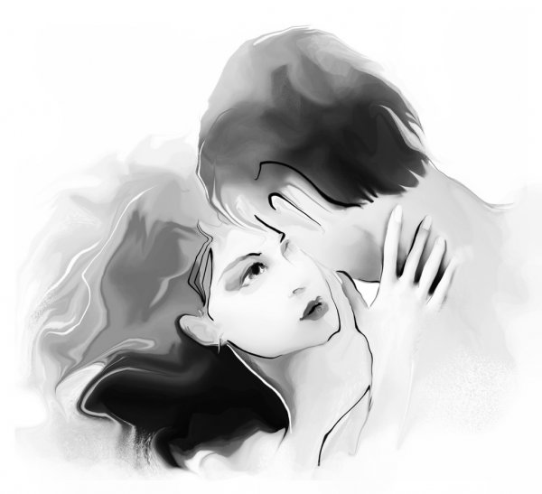

 Утро. Солнечные лучи игрались в золотистых волосах Эроса, его розовый румянец на щеках, пухлые губы, белая, рваная рубашка, босые ноги-все выглядело гармонично. Эрос на секунду приоткрыл глаза и увидел перед собой, светящийся от солнца силуэт. Эта была юная девушка, лет шестнадцати, с длинными, чёрными, как ночь волосами. Ее голубые глаза, ее нежная черты лица, не могли остановить Эроса восхищаться. Он никогда не видел девушки, подобной небу. На секунду, она ему что-то напомнила, но из-за голода, мысли в его голове путались, превращаясь в отрывки разных событий. Открыв глаза, Эрос поднялся и не мог опустить свой взгляд с юной красавицы. Она стояла напротив него, в белом одеянии, цветочный венок в ее черных волосах напоминал Эросу его сад у дома. Она не проронила ни словечка. Кажется, она была прекрасна и без того. Ее улыбка будто пленила Эроса. Взяв его за руку, она повела его в сторону леса. Уже придя в себя, Эрос набрался храбрости и сказал ей: «Ну не молчи, прелестное создание. Я хочу знать о тебе все. Откуда ты такая? Как ты нашла меня здесь?», «Иди за мной,-с ухмылкой сказала девушка,-не отпускай мою руку». Эрос и не хотел отпускать, ее рука была настолько теплой, что согревала не только его тело, но и сердце. Девушка на секунду остановилась. Эрос осмотрелся, увидел маленький дом из камня и сказал про себя: «Кажется мы на месте. Но что она хочет? Кто же она такая?». «Пойдем за мной»,-сказала красавица. Эрос последовал за ней. Зайдя в дом, девушка посадила его на стул и дала воду, поставила на стол тарелку с оливками и рыбой, аромат был очень аппетитным, парень не помнил, когда он последний раз ел. Эрос начал трапезу. Юная девушка стояла напротив стола и смотрела на парня. «Ты хоть жуй,-подшутив сказала девушка, подметив торопливость Эроса,-откуда ты?». «Я из деревни, что недалеко от реки Эридан. На нас напали, а семью и вовсе убили, я смог убежать, потерял силы. Я ничего не помню больше.-ответил Эрос девушке». Она посмотрела на него с сочувствием, кажется, ей уже было не до шуток. Из ее голубых, как небо глаз, покатились настоящие слезы. «Я собирала камешки у моря и увидела, как что-то белое у оливкового дерева лежало на траве. Я подошла поближе и увидела тебя». Отодвинув пустую тарелку на край стола, Эрос встал и подошел ближе к девушке. Его рука оказалась на ее талии, он прошептал ей: «Кто ты, моя спасительница, подобная нежному, голубому цветку, пробуждающая во мне такие чувства?» . У девушки замерло сердце. Она была уверена, что это любовь. Вдруг с грохотом, дверь в дом открылась. Девушка отошла от Эроса. В проходе стоял мужчина средних лет. По его лицу, было понятно, что парню тут не рады. Эрос только двинулся к выходу, как девушка промолвила: «Папа..». Теперь он знал, кто этот незнакомый мужчина….
С детства Ия воспитывалась по строгим правилам своего отца Пэйона. Ее две сестры умерли во младенчестве от болезни. А мать - Офелия , не выдержала такого горя и покончила с собой. Для своего отца-Ия была смыслом жизни. Он старался заменить ей мать и стать лучшим отцом, хоть и был строг. Несмотря на такую судьбу, Ия росла в любви и заботе. Пэйон постоянно твердил своей дочери, что замуж она выйдет за Орфея-молодого юношу, у которого влиятельные родители, который все не может дождаться ее совершеннолетия. Для Ии, Орфей был высокомерным, глупым, эгоистичным и лживым парнем. Он не стоил даже пальчика на ее руке. И хоть Ия и пыталась поменять мнение своего отца, говоря, что она выйдет замуж только за любимого человека, а не по чьей-то прихоти-спорить ей было с ним бесполезно. Девушка сильно обижалась на своего отца, но ничего не могла поделать. Он был непоколебим. Увидев отца в дверях дома, девушка промолвила: «Тебе нужно уходить. Не задавай мне лишних вопросов, просто послушай меня». Эрос был в замешательстве, не понимая, что происходит-он схватил ее за руку и хотел двинуться с ней. Но услышав крики отца, девушка оттолкнула Эроса и сказала: «Тебе нужно бежать. Мы встретимся с тобой сегодня ночью у того оливкового дерева, где мы впервые увидели друг друга. Уходи! Прошу тебя!». Эрос тотчас скрылся. Зашедший в комнату отец закричал: «Что это за незнакомец? И что он делает в моем доме?». «Мне надоело жить по твоим правила. Почему я должна выходить замуж за нелюбимого человека? Почему? Ведь ты женился на моей матери по любви, ты был с ней счастлив. Почему ты не хочешь, чтобы была счастлива и твоя дочь?,-со слезами на глазах, сказала девушка» . «Орфей-очень хороший юноша! Он всегда придет на помощь и от тебя без ума, я уверен, он не даст тебя в обиду. Отец любимой дочери плохого не посоветует»-сказал Пэйон. Девушка, не ответив отцу, направилась в свою комнату, где заперла дверь на замок. Она села на кровать и сгорала от любви к незнакомцу. Даже не зная его имени, она помнила его зеленые глаза, его аромат, она слышала его шепот, который не давал ей покоя. С наступлением полуночи и дождавшись, пока отец уснет, девушка бросилась к берегу Эгейского моря. По дороге, смотря на звездное небо, она предвкушала эту встречу. Ей очень хотелось узнать имя этого прекрасного парня, который был послан ей, казалось, самим Богом. Она хотела сказать ему, что в ее сердце, происходит что-то странное. Оно ликовало от счастья. Подобного чувства, она не испытывала никогда. Дойдя до того самого дерева, девушка так и не увидела своего возлюбленного. Ее сердце замерло. В голове звучал один и тот же вопрос : «Где он? Почему он не пришел? А если я его больше никогда не увижу?». С чувством боли, девушка к утру вернулась домой, так и не узнав его имя. Время шло. Девушка не переставала думать о Эросе. С наступлением ее совершеннолетия, отец Пэйон подписал договор с Орфеем. Помолвка случилась. Ие пришлось играть роль счастливый жены для Орфея. Но она не была счастлива. Она ни на минуту не прекращала думать о Эросе. В ее сердце была надежда, что он заберет ее отсюда, они убегут, построят дом, родят детей и будут навсегда вместе.